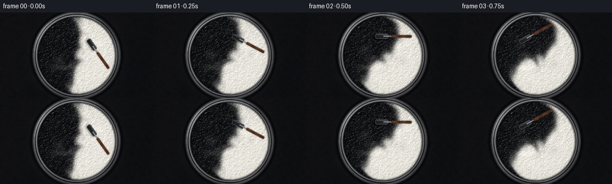
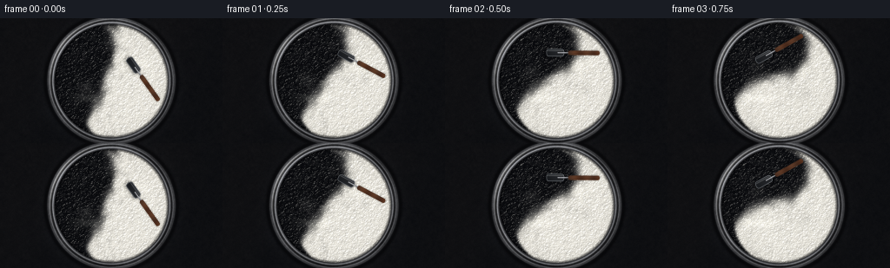
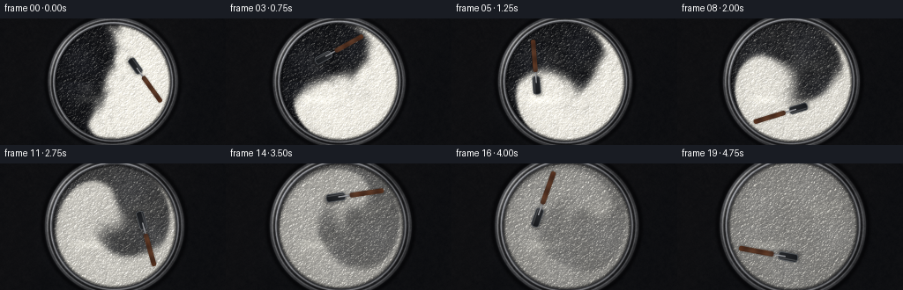
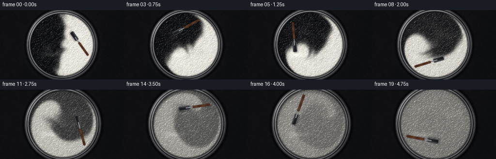
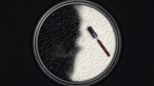
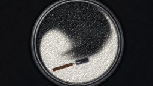
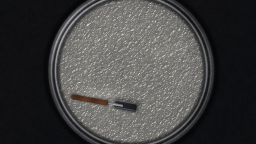
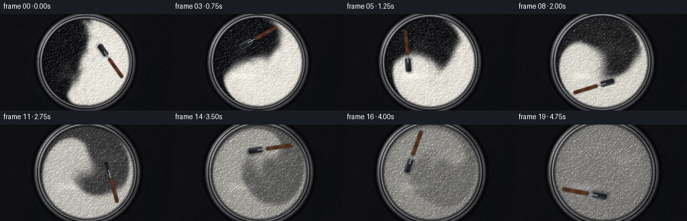
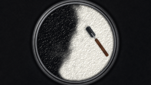
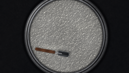

CODING AGENTS AS PIXEL WORLD MODELS
traex/DeepSeek-V4.1-Flash · material_0002
点击播放 · 原生 RGB 像素
逐轮保存的候选
回放视频、检查图与代码变化。
每份候选均可单独播放。实际图片检查记录在下方工具轨迹中。
候选 01播放与检查图
点击播放 · 原生 RGB 像素


展开代码变化
--- 上一保存版本
+++ 本次保存版本
@@ -0,0 +1,385 @@
+from __future__ import annotations
+
+import math
+from pathlib import Path
+
+import cv2
+import numpy as np
+from PIL import Image
+from scipy import ndimage
+
+import artifact_io
+
+
+CASE_DIR = Path(__file__).resolve().parent
+W, H = 256, 144
+FRAMES = 20
+FPS = 4.0
+
+# The concentration and displacement fields are simulated at twice the output
+# resolution. Rendering is supersampled once more for clean, fine paint edges.
+SIM_W, SIM_H = 512, 288
+RENDER_W, RENDER_H = 768, 432
+SIM_CX, SIM_CY = SIM_W / 2.0, SIM_H / 2.0 + 1.0
+SIM_R = 125.0
+
+
+def smoothstep(edge0, edge1, x):
+ t = np.clip((x - edge0) / (edge1 - edge0), 0.0, 1.0)
+ return t * t * (3.0 - 2.0 * t)
+
+
+def fbm(shape, rng, scales=(3.0, 6.0, 12.0, 24.0, 48.0), weights=(0.46, 0.25, 0.15, 0.09, 0.05)):
+ out = np.zeros(shape, np.float32)
+ for scale, weight in zip(scales, weights):
+ small_shape = (max(4, int(shape[0] / scale)), max(4, int(shape[1] / scale)))
+ noise = rng.standard_normal(small_shape).astype(np.float32)
+ noise = cv2.resize(noise, (shape[1], shape[0]), interpolation=cv2.INTER_CUBIC)
+ out += weight * noise
+ out -= out.mean()
+ out /= max(out.std(), 1e-6)
+ return out
+
+
+def initial_paint_field():
+ rng = np.random.default_rng(271828)
+ yy, xx = np.mgrid[:SIM_H, :SIM_W].astype(np.float32)
+ x = (xx - SIM_CX) / SIM_R
+ y = (yy - SIM_CY) / SIM_R
+
+ broad = fbm((SIM_H, SIM_W), rng, scales=(22, 38, 64), weights=(0.55, 0.3, 0.15))
+ medium = fbm((SIM_H, SIM_W), rng, scales=(7, 13, 24), weights=(0.55, 0.3, 0.15))
+
+ # Two equal bodies meet in an irregular S-shaped seam, with a few folds
+ # already started by the first strokes of the scraper.
+ seam = (
+ 0.015
+ + 0.075 * np.sin(3.4 * y + 0.55)
+ + 0.045 * np.sin(8.5 * y - 0.9)
+ + 0.026 * broad
+ + 0.010 * medium
+ )
+ c = 1.0 / (1.0 + np.exp(-(x - seam) / 0.032))
+
+ # Slightly uneven paint masses keep the initial split from looking graphic.
+ c += 0.055 * medium * np.exp(-((x - 0.02) ** 2) / 0.05)
+ c = np.clip(c, 0.0, 1.0)
+
+ # A few small islands make the interface read as viscous paint rather than
+ # two flat screen-space regions.
+ island1 = np.exp(-(((x + 0.36) / 0.12) ** 2 + ((y - 0.20) / 0.08) ** 2))
+ island2 = np.exp(-(((x - 0.34) / 0.10) ** 2 + ((y + 0.28) / 0.07) ** 2))
+ c = np.clip(c + 0.10 * island1 - 0.09 * island2, 0.0, 1.0)
+ return c.astype(np.float32)
+
+
+def velocity_field(x, y, t):
+ r2 = x * x + y * y
+ r = np.sqrt(r2 + 1e-7)
+ wall = smoothstep(1.02, 0.76, r)
+
+ # Differential rotation folds the two paint bodies into long lamellae.
+ omega = (1.22 + 0.22 * math.sin(2.0 * math.pi * t / 2.3)) * (0.38 + 0.82 * np.exp(-1.8 * r2))
+ u = -y * omega
+ v = x * omega
+
+ # Two travelling vortices add the irregular, vigorous motion of a scraper
+ # working through thick paint.
+ a1 = 1.35 * t + 0.4
+ a2 = -1.65 * t + 2.0
+ for angle, strength, width in (
+ (a1, 0.50, 0.24),
+ (a2, -0.43, 0.20),
+ ):
+ cx, cy = 0.43 * math.cos(angle), 0.43 * math.sin(angle)
+ dx, dy = x - cx, y - cy
+ g = np.exp(-(dx * dx + dy * dy) / (2.0 * width * width))
+ u += -strength * dy / width * g
+ v += strength * dx / width * g
+
+ # Gentle radial breathing helps close the fine filaments and prevents the
+ # mixture from becoming a rigidly rotating print.
+ pulse = 0.075 * math.sin(2.0 * math.pi * t / 1.55)
+ u += pulse * x * (1.0 - np.exp(-5.0 * r2)) * wall
+ v += pulse * y * (1.0 - np.exp(-5.0 * r2)) * wall
+ return u * wall, v * wall
+
+
+def simulate_paint():
+ c = initial_paint_field()
+ rng = np.random.default_rng(314159)
+ fine = fbm((SIM_H, SIM_W), rng, scales=(5, 11, 20, 38), weights=(0.48, 0.27, 0.16, 0.09))
+ fine = ndimage.gaussian_filter(fine, 0.55)
+
+ yy, xx = np.mgrid[:SIM_H, :SIM_W].astype(np.float32)
+ base_x = (xx - SIM_CX) / SIM_R
+ base_y = (yy - SIM_CY) / SIM_R
+ frames = []
+ subframes = 8
+ dt = 0.25 / subframes
+
+ for frame_index in range(FRAMES):
+ t = frame_index / FPS
+ for sub in range(subframes):
+ ts = t + (sub + 0.5) * dt
+ u, v = velocity_field(base_x, base_y, ts)
+ sample_x = xx - u * SIM_R * dt
+ sample_y = yy - v * SIM_R * dt
+ advected = ndimage.map_coordinates(
+ c,
+ [sample_y, sample_x],
+ order=1,
+ mode="nearest",
+ prefilter=False,
+ )
+ c = 0.88 * advected + 0.12 * c
+
+ # Thick paint still creeps, while shear along the moving scraper
+ # accelerates molecular-scale mixing late in the action.
+ rate = 0.014 + 0.023 * ts ** 3
+ c = 0.5 + (c - 0.5) * math.exp(-rate * dt)
+ c = ndimage.gaussian_filter(c, 0.11 + 0.035 * min(ts, 4.75), mode="nearest")
+ c = np.clip(c, 0.0, 1.0)
+
+ display = np.clip(c + 0.013 * fine * (1.0 - 0.65 * min(t / 4.75, 1.0)), 0.0, 1.0)
+ frames.append(display.astype(np.float32))
+ return frames
+
+
+def tool_pose(t):
+ # A little over one and a half clockwise sweeps, with a hand-driven wobble.
+ angle = -0.62 - 2.0 * math.pi * 0.34 * t + 0.075 * math.sin(2.3 * t)
+ orbit = 0.43 + 0.018 * math.sin(1.6 * t + 0.3)
+ cx = orbit * math.cos(angle)
+ cy = orbit * math.sin(angle)
+ blade_angle = angle + math.pi / 2.0 + 0.07 * math.sin(1.9 * t)
+ return cx, cy, blade_angle, angle
+
+
+def rotated_distance(px, py, cx, cy, angle):
+ dx, dy = px - cx, py - cy
+ ca, sa = math.cos(angle), math.sin(angle)
+ return ca * dx + sa * dy, -sa * dx + ca * dy
+
+
+def rounded_box_sdf(x, y, half_w, half_h, radius):
+ qx = np.abs(x) - (half_w - radius)
+ qy = np.abs(y) - (half_h - radius)
+ outside = np.sqrt(np.maximum(qx, 0.0) ** 2 + np.maximum(qy, 0.0) ** 2)
+ return outside + np.minimum(np.maximum(qx, qy), 0.0) - radius
+
+
+def make_background(rr, gx, gy, rng):
+ grain = fbm((RENDER_H, RENDER_W), rng, scales=(3, 7, 15, 31), weights=(0.4, 0.29, 0.2, 0.11))
+ vignette = np.clip(1.0 - 0.34 * (gx * gx + gy * gy), 0.52, 1.0)
+ warm = np.clip(0.5 + 0.5 * np.sin(3.0 * gx + 1.1 * gy), 0.0, 1.0)
+ bg = np.empty((RENDER_H, RENDER_W, 3), np.float32)
+ bg[..., 0] = (31 + 5.0 * warm + 2.2 * grain) * vignette
+ bg[..., 1] = (33 + 3.4 * warm + 2.0 * grain) * vignette
+ bg[..., 2] = (36 + 2.2 * warm + 1.8 * grain) * vignette
+
+ # Broad reflection of a soft studio light on the countertop.
+ soft = np.exp(-(((gx + 0.58) / 0.35) ** 2 + ((gy - 0.52) / 0.13) ** 2))
+ bg += soft[..., None] * np.array([8.0, 9.0, 10.0], np.float32)
+ return bg
+
+
+def render_frame(field, frame_index):
+ rng = np.random.default_rng(1009)
+ t = frame_index / FPS
+
+ # A slow push-in keeps the close-up alive without distracting from the paint.
+ zoom = 0.992 + 0.0065 * frame_index
+ shift_x = 0.0022 * frame_index
+ shift_y = -0.0010 * frame_index
+ yy, xx = np.mgrid[:RENDER_H, :RENDER_W].astype(np.float32)
+ gx = (xx - RENDER_W / 2.0) / (RENDER_H / 2.0)
+ gy = (yy - RENDER_H / 2.0) / (RENDER_H / 2.0)
+ ux = (gx - shift_x) / zoom
+ uy = (gy - shift_y) / zoom
+ rr = np.sqrt(ux * ux + uy * uy)
+
+ background = make_background(rr, gx, gy, rng)
+
+ # Coordinates in the simulated paint field.
+ sample_x = ux * SIM_R + SIM_CX
+ sample_y = uy * SIM_R + SIM_CY
+ c = cv2.remap(
+ field,
+ sample_x.astype(np.float32),
+ sample_y.astype(np.float32),
+ interpolation=cv2.INTER_CUBIC,
+ borderMode=cv2.BORDER_REFLECT,
+ )
+
+ detail = fbm((RENDER_H, RENDER_W), rng, scales=(2.2, 4.5, 8.0, 16.0), weights=(0.35, 0.3, 0.22, 0.13))
+ fine = fbm((RENDER_H, RENDER_W), rng, scales=(1.7, 3.2, 6.0), weights=(0.52, 0.3, 0.18))
+ angle = np.arctan2(uy, ux)
+
+ # Height relief: small paint ridges, edge piles, and the wake left by the
+ # scraper. The wake is strongest just behind the current blade position.
+ tool_x, tool_y, blade_angle, orbit_angle = tool_pose(t)
+ local_x = ux - tool_x
+ local_y = uy - tool_y
+ tool_r = np.sqrt(local_x * local_x + local_y * local_y + 1e-8)
+ current_angle = np.arctan2(uy, ux)
+ trail = np.mod(orbit_angle - current_angle, 2.0 * math.pi)
+ wake_band = np.exp(-((rr - 0.44) / 0.14) ** 2)
+ wake = wake_band * np.exp(-((trail - 0.38) / 0.42) ** 2)
+ wake *= (0.5 + 0.5 * np.cos(18.0 * trail + 1.8 * rr))
+ edge_pile = smoothstep(0.75, 0.91, rr) * (1.0 - smoothstep(0.90, 0.925, rr))
+ contact = np.exp(-(tool_r / 0.16) ** 2)
+
+ height = (
+ 0.17 * detail
+ + 0.055 * fine
+ + 0.065 * wake
+ + 0.040 * edge_pile
+ - 0.085 * contact
+ + 0.030 * np.sin(10.0 * c + 2.5 * detail)
+ )
+ height = ndimage.gaussian_filter(height, 0.7)
+ dhdy, dhdx = np.gradient(height)
+ normal = np.dstack((-3.2 * dhdx, -3.2 * dhdy, np.ones_like(height)))
+ normal /= np.linalg.norm(normal, axis=2, keepdims=True)
+
+ light = np.array([-0.48, -0.60, 0.64], np.float32)
+ light /= np.linalg.norm(light)
+ diffuse = np.clip(np.sum(normal * light, axis=2), 0.0, 1.0)
+ view = np.array([0.0, 0.0, 1.0], np.float32)
+ half_vec = light + view
+ half_vec /= np.linalg.norm(half_vec)
+ spec = np.clip(np.sum(normal * half_vec, axis=2), 0.0, 1.0) ** 44
+
+ black_paint = np.array([8.0, 9.0, 11.0], np.float32)
+ white_paint = np.array([238.0, 235.0, 224.0], np.float32)
+ color_c = np.clip(c + 0.020 * detail, 0.0, 1.0)
+ paint = black_paint + (white_paint - black_paint) * color_c[..., None]
+ paint *= (0.79 + 0.28 * diffuse[..., None])
+
+ # Soft, elongated studio reflections make the surface read as wet paint.
+ studio = np.exp(-(((ux + 0.37) / 0.23) ** 2 + ((uy - 0.28) / 0.065) ** 2))
+ fill = np.exp(-(((ux - 0.38) / 0.25) ** 2 + ((uy + 0.24) / 0.10) ** 2))
+ paint += (studio[..., None] * np.array([27.0, 27.0, 25.0], np.float32))
+ paint += (fill[..., None] * np.array([9.0, 9.0, 8.0], np.float32))
+ paint += spec[..., None] * np.array([118.0, 116.0, 108.0], np.float32)
+
+ # Subtle suspension speckle in the white and charcoal areas.
+ speck = np.clip(fine, -0.9, 2.2)
+ paint += (0.45 + 1.25 * c)[..., None] * np.array([2.1, 2.0, 1.8], np.float32) * speck[..., None]
+
+ # Thin dark contact line where paint meets the inner steel wall.
+ inner_shadow = np.exp(-((rr - 0.905) / 0.020) ** 2)
+ paint *= (1.0 - 0.48 * inner_shadow[..., None])
+ paint += 0.055 * wake[..., None] * np.array([5.0, 5.0, 5.0], np.float32)
+
+ # Stainless rim and outer bowl wall.
+ rim_t = np.clip((rr - 0.915) / 0.105, 0.0, 1.0)
+ brushed = fbm((RENDER_H, RENDER_W), rng, scales=(2.0, 4.0, 9.0, 20.0), weights=(0.35, 0.3, 0.22, 0.13))
+ rim_profile = (
+ 62
+ + 100 * np.exp(-((rim_t - 0.27) / 0.095) ** 2)
+ + 54 * np.exp(-((rim_t - 0.76) / 0.085) ** 2)
+ - 45 * np.exp(-((rim_t - 0.53) / 0.16) ** 2)
+ )
+ angular_glint = 0.5 + 0.5 * np.cos(5.0 * angle + 0.6)
+ rim_val = np.clip(rim_profile + 18 * angular_glint + 4.5 * brushed, 25, 226)
+ rim = np.dstack((rim_val * 1.00, rim_val * 1.01, rim_val * 1.03))
+ rim *= (0.78 + 0.32 * np.clip(np.cos(angle + 2.4), 0.0, 1.0))[..., None]
+
+ outer_wall = smoothstep(1.045, 1.00, rr) * (1.0 - smoothstep(1.00, 0.985, rr))
+ outer_shadow = np.exp(-((rr - 1.065) / 0.035) ** 2)
+ background *= (1.0 - 0.56 * outer_shadow[..., None])
+ background += outer_wall[..., None] * np.array([54.0, 53.0, 51.0], np.float32)
+
+ paint_mask = 1.0 - smoothstep(0.905, 0.922, rr)
+ rim_mask = smoothstep(0.908, 0.928, rr) * (1.0 - smoothstep(1.020, 1.040, rr))
+ image = background * (1.0 - paint_mask[..., None]) + paint * paint_mask[..., None]
+ image = image * (1.0 - rim_mask[..., None]) + rim * rim_mask[..., None]
+
+ # A soft specular sweep along the upper-left rim.
+ rim_glint = np.exp(-((rr - 0.985) / 0.014) ** 2) * np.clip(np.cos(angle + 2.55), 0.0, 1.0) ** 4
+ image += rim_glint[..., None] * np.array([75.0, 74.0, 70.0], np.float32)
+
+ # The scraper: black silicone blade, polished shaft, dark handle.
+ bx, by = tool_x, tool_y
+ along, across = rotated_distance(ux, uy, bx, by, blade_angle)
+ blade_sdf = rounded_box_sdf(along, across, 0.150, 0.058, 0.035)
+ blade_alpha = 1.0 - smoothstep(-0.0035, 0.0035, blade_sdf)
+ bevel = smoothstep(-0.018, -0.004, blade_sdf) * (1.0 - smoothstep(-0.004, 0.002, blade_sdf))
+ blade_shadow = 1.0 - smoothstep(-0.008, 0.030, rounded_box_sdf(along + 0.012, across - 0.018, 0.155, 0.063, 0.038))
+ blade_shadow = ndimage.gaussian_filter(blade_shadow, 3.0)
+
+ image *= (1.0 - 0.27 * blade_shadow[..., None])
+ blade_color = np.broadcast_to(np.array([32.0, 34.0, 36.0], np.float32), (RENDER_H, RENDER_W, 3)).copy()
+ blade_color += (9.0 * np.clip(along / 0.15, -1, 1))[..., None]
+ blade_color += bevel[..., None] * np.array([70.0, 72.0, 73.0], np.float32)
+ blade_highlight = np.exp(-((across + 0.031) / 0.008) ** 2) * (1.0 - smoothstep(0.10, 0.15, np.abs(along)))
+ blade_color += blade_highlight[..., None] * np.array([50.0, 50.0, 49.0], np.float32)
+ image = image * (1.0 - blade_alpha[..., None]) + blade_color * blade_alpha[..., None]
+
+ # Shaft extends radially outward from the blade.
+ shaft_along, shaft_across = rotated_distance(ux, uy, bx, by, blade_angle)
+ shaft_center = 0.205
+ shaft_sdf = rounded_box_sdf(shaft_along - shaft_center, shaft_across, 0.170, 0.014, 0.012)
+ shaft_alpha = 1.0 - smoothstep(-0.0025, 0.0025, shaft_sdf)
+ shaft_shadow = ndimage.gaussian_filter(1.0 - smoothstep(-0.006, 0.022, shaft_sdf), 2.0)
+ image *= (1.0 - 0.20 * shaft_shadow[..., None])
+ shaft_val = 118 + 64 * np.exp(-((shaft_across + 0.004) / 0.005) ** 2) + 8 * np.sin(60 * shaft_along)
+ shaft_color = np.dstack((shaft_val, shaft_val * 1.01, shaft_val * 1.03))
+ image = image * (1.0 - shaft_alpha[..., None]) + shaft_color * shaft_alpha[..., None]
+
+ # Warm wooden grip crossing the rim, anchored outside the crop.
+ handle_along = shaft_along - 0.455
+ handle_sdf = rounded_box_sdf(handle_along, shaft_across, 0.235, 0.032, 0.026)
+ handle_alpha = 1.0 - smoothstep(-0.003, 0.003, handle_sdf)
+ handle_shadow = ndimage.gaussian_filter(1.0 - smoothstep(-0.006, 0.025, handle_sdf), 2.2)
+ image *= (1.0 - 0.24 * handle_shadow[..., None])
+ wood = np.dstack(
+ (
+ 79 + 10 * np.sin(31 * handle_along + 2.0 * shaft_across) + 9 * np.exp(-((shaft_across + 0.012) / 0.008) ** 2),
+ 48 + 7 * np.sin(29 * handle_along + 1.4 * shaft_across) + 6 * np.exp(-((shaft_across + 0.012) / 0.008) ** 2),
+ 31 + 5 * np.sin(27 * handle_along) + 4 * np.exp(-((shaft_across + 0.012) / 0.008) ** 2),
+ )
+ )
+ image = image * (1.0 - handle_alpha[..., None]) + wood * handle_alpha[..., None]
+
+ # Slight global lens falloff and cool shadow tint.
+ lens = np.clip(1.04 - 0.10 * (gx * gx + gy * gy), 0.86, 1.0)
+ image *= lens[..., None]
+ image[..., 2] += 1.3
+
+ image = np.clip(image, 0.0, 255.0).astype(np.uint8)
+ image = cv2.resize(image, (W, H), interpolation=cv2.INTER_AREA)
+ return image
+
+
+def main():
+ fields = simulate_paint()
+ frames = np.stack([render_frame(field, i) for i, field in enumerate(fields)], axis=0)
+ frames = np.clip(frames, 0, 255).astype(np.uint8)
+ artifact_io.save(frames, CASE_DIR)
+
+ # An MP4 is convenient for direct playback; the required artifact is still
+ # pixels.npz plus the frame set produced by artifact_io.save.
+ writer = cv2.VideoWriter(
+ str(CASE_DIR / "video.mp4"),
+ cv2.VideoWriter_fourcc(*"mp4v"),
+ FPS,
+ (W, H),
+ )
+ for frame in frames:
+ writer.write(cv2.cvtColor(frame, cv2.COLOR_RGB2BGR))
+ writer.release()
+
+ print(f"wrote {len(frames)} frames, {W}x{H} at {FPS:g} fps")
+ print("concentration ranges by frame:")
+ for index, field in enumerate(fields):
+ print(
+ f" {index:02d}: {field.min():.3f}..{field.max():.3f} "
+ f"std={field.std():.3f} mean={field.mean():.3f}"
+ )
+
+
+if __name__ == "__main__":
+ main()
候选 02播放与检查图
点击播放 · 原生 RGB 像素


展开代码变化
--- 上一保存版本
+++ 本次保存版本
@@ -53,11 +53,12 @@
# Two equal bodies meet in an irregular S-shaped seam, with a few folds
# already started by the first strokes of the scraper.
seam = (
- 0.015
- + 0.075 * np.sin(3.4 * y + 0.55)
- + 0.045 * np.sin(8.5 * y - 0.9)
- + 0.026 * broad
- + 0.010 * medium
+ -0.095
+ - 0.17 * y
+ + 0.090 * np.sin(3.4 * y + 0.55)
+ + 0.052 * np.sin(8.5 * y - 0.9)
+ + 0.032 * broad
+ + 0.012 * medium
)
c = 1.0 / (1.0 + np.exp(-(x - seam) / 0.032))
@@ -304,7 +305,9 @@
# The scraper: black silicone blade, polished shaft, dark handle.
bx, by = tool_x, tool_y
along, across = rotated_distance(ux, uy, bx, by, blade_angle)
- blade_sdf = rounded_box_sdf(along, across, 0.150, 0.058, 0.035)
+ head_width = 0.145 * (0.72 + 0.28 * np.sqrt(np.clip(1.0 - (across / 0.065) ** 2, 0.0, 1.0)))
+ blade_sdf = rounded_box_sdf(along, across, 0.145, 0.062, 0.045)
+ blade_sdf = np.maximum(blade_sdf, np.abs(along) - head_width)
blade_alpha = 1.0 - smoothstep(-0.0035, 0.0035, blade_sdf)
bevel = smoothstep(-0.018, -0.004, blade_sdf) * (1.0 - smoothstep(-0.004, 0.002, blade_sdf))
blade_shadow = 1.0 - smoothstep(-0.008, 0.030, rounded_box_sdf(along + 0.012, across - 0.018, 0.155, 0.063, 0.038))
@@ -321,7 +324,7 @@
# Shaft extends radially outward from the blade.
shaft_along, shaft_across = rotated_distance(ux, uy, bx, by, blade_angle)
shaft_center = 0.205
- shaft_sdf = rounded_box_sdf(shaft_along - shaft_center, shaft_across, 0.170, 0.014, 0.012)
+ shaft_sdf = rounded_box_sdf(shaft_along - shaft_center, shaft_across, 0.170, 0.0105, 0.009)
shaft_alpha = 1.0 - smoothstep(-0.0025, 0.0025, shaft_sdf)
shaft_shadow = ndimage.gaussian_filter(1.0 - smoothstep(-0.006, 0.022, shaft_sdf), 2.0)
image *= (1.0 - 0.20 * shaft_shadow[..., None])
@@ -331,7 +334,7 @@
# Warm wooden grip crossing the rim, anchored outside the crop.
handle_along = shaft_along - 0.455
- handle_sdf = rounded_box_sdf(handle_along, shaft_across, 0.235, 0.032, 0.026)
+ handle_sdf = rounded_box_sdf(handle_along, shaft_across, 0.250, 0.036, 0.030)
handle_alpha = 1.0 - smoothstep(-0.003, 0.003, handle_sdf)
handle_shadow = ndimage.gaussian_filter(1.0 - smoothstep(-0.006, 0.025, handle_sdf), 2.2)
image *= (1.0 - 0.24 * handle_shadow[..., None])
候选 03播放与检查图
点击播放 · 原生 RGB 像素

展开代码变化
--- 上一保存版本
+++ 本次保存版本
@@ -252,18 +252,21 @@
half_vec /= np.linalg.norm(half_vec)
spec = np.clip(np.sum(normal * half_vec, axis=2), 0.0, 1.0) ** 44
- black_paint = np.array([8.0, 9.0, 11.0], np.float32)
+ black_paint = np.array([13.0, 14.0, 16.0], np.float32)
white_paint = np.array([238.0, 235.0, 224.0], np.float32)
color_c = np.clip(c + 0.020 * detail, 0.0, 1.0)
paint = black_paint + (white_paint - black_paint) * color_c[..., None]
- paint *= (0.79 + 0.28 * diffuse[..., None])
+ paint *= (0.83 + 0.28 * diffuse[..., None])
# Soft, elongated studio reflections make the surface read as wet paint.
studio = np.exp(-(((ux + 0.37) / 0.23) ** 2 + ((uy - 0.28) / 0.065) ** 2))
fill = np.exp(-(((ux - 0.38) / 0.25) ** 2 + ((uy + 0.24) / 0.10) ** 2))
paint += (studio[..., None] * np.array([27.0, 27.0, 25.0], np.float32))
paint += (fill[..., None] * np.array([9.0, 9.0, 8.0], np.float32))
- paint += spec[..., None] * np.array([118.0, 116.0, 108.0], np.float32)
+ paint += spec[..., None] * np.array([128.0, 126.0, 118.0], np.float32)
+ black_sheen = (1.0 - c) * np.clip(0.50 + 0.50 * np.cos(4.4 * angle - 1.2), 0.0, 1.0)
+ black_sheen *= np.exp(-((rr - 0.58) / 0.35) ** 2)
+ paint += black_sheen[..., None] * np.array([8.0, 8.5, 10.0], np.float32)
# Subtle suspension speckle in the white and charcoal areas.
speck = np.clip(fine, -0.9, 2.2)
可观测工具轨迹
实际执行的命令与返回图片。
命令 1exit 0
/bin/bash -c 'cat prompt.txt'
命令 2exit 0
/bin/bash -c 'cat GENERATION_RULES.md'
命令 3exit 0
/bin/bash -c 'cat task_spec.json'
命令 4exit 0
/bin/bash -c "find . -maxdepth 2 -type f -printf '%p\\n' | sort | head -200"
命令 5exit 0
/bin/bash -c "sed -n '1,260p' artifact_io.py"
命令 6exit 0
/bin/bash -c "sed -n '1,260p' player_template.html"
命令 7exit 0
/bin/bash -c "python - <<'PY' import importlib.util for m in ['numpy','PIL','scipy','cv2','imageio','matplotlib']: print(m, bool(importlib.util.find_spec(m))) PY"
命令 8exit 1
/bin/bash -c 'python generate.py'
命令 9exit 0
/bin/bash -c 'python generate.py'
命令 10exit 0
/bin/bash -c 'python generate.py'
命令 11exit 0
/bin/bash -c 'python generate.py'
命令 12exit 127
/bin/bash -c 'ffprobe -v error -select_streams v:0 -show_entries stream=codec_name,width,height,r_frame_rate,nb_frames,duration -of default=noprint_wrappers=1 video.mp4'
命令 13exit 0
/bin/bash -c 'ls -lh generate.py pixels.npz video.mp4 index.html inspection.png transition_check.png frames | head -40'
命令 14exit 0
/bin/bash -c "python - <<'PY'
import json, numpy as np
from PIL import Image
from pathlib import Path
p=Path('.')
z=np.load('pixels.npz')['pixels']
print('pixels', z.shape, z.dtype)
print('frames', len(list((p/'frames').glob('*.png'))))
print('sizes', sorted({Image.open(x).size for x in (p/'frames').glob('*.png')}))
f=np.stack([np.asarray(Image.open(p/'frames'/f'{i:02d}.png')) for i in range(20)])
d=np.abs(np.diff(f.astype(np.int16),axis=0))
print('frame delta mean', float(d.mean()), 'max', int(d.max()), 'nonzero fraction', float((d>0).mean()))
print('final mean/std', f[-1].mean(axis=(0,1)).round(2).tolist(), f[-1].std(axis=(0,1)).round(2).tolist())
PY"命令 15exit 0
/bin/bash -c 'git status --short'
命令 16exit 0
/bin/bash -c "python - <<'PY'
import cv2
cap=cv2.VideoCapture('video.mp4')
print('opened', cap.isOpened())
print('size', int(cap.get(cv2.CAP_PROP_FRAME_WIDTH)), int(cap.get(cv2.CAP_PROP_FRAME_HEIGHT)))
print('fps', cap.get(cv2.CAP_PROP_FPS))
print('frames', int(cap.get(cv2.CAP_PROP_FRAME_COUNT)))
n=0
ok=True
while True:
ret, frame=cap.read()
if not ret: break
n+=1
ok &= frame is not None and frame.shape[:2] == (144,256)
print('decoded', n, 'all_valid', ok)
PY"视觉工具实际返回图片 1

视觉工具实际返回图片 2

视觉工具实际返回图片 3

视觉工具实际返回图片 4

视觉工具实际返回图片 5

视觉工具实际返回图片 6

视觉工具实际返回图片 7

视觉工具实际返回图片 8

保存候选 3 份；完成命令 16 次；可验证图片返回 8 张。原始 API 响应与完整日志保留在本地。